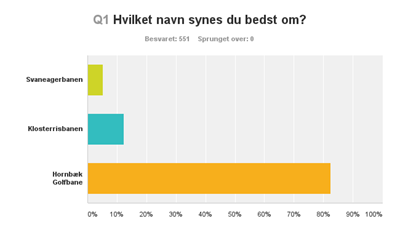

<div class="pages">
  <div data-page="569-551-stemmer-hornbaek-golfbane-vinder-afstemningen" class="page navbar-fixed toolbar-fixed" >
    <div class="navbar">
      <div class="navbar-inner">
        <div class="left">
          <a href="#" class="link back icon-only"><i class="icon icon-back"></i></a>
          <!-- <a href="#" class="back link icon-only"><i class="icon icon-back"></i></a> -->
        </div>
        <div class="center">551 stemmer - "Hornbæk Golfbane" vinder afstemningen</div>
        <!-- <div class="right"></div> -->
        <div class="right">
        </div>
      </div>
    </div>
    <div class="page-content" style="padding-top:45px;">
       <div class="content-block">
          <p><b>551 stemmer - "Hornbæk Golfbane" vinder afstemningen</b></p>
          <center></center>
          <p>Tak for alle stemmerne og tilllykke til Andrea Kali, der som den eneste havde indsendt dette forslag.
            <br /><br />
            Gevinsten på 2 greenfee vouchers kan hentes i Sekretariatet.
            <br /><br /> 
            Vi er gået i gang med at rette systemer m.m. så det nye navn fremgår. Allerede nu er det rettet i Golfbox.
            <br /><br /> 
            Resultatet blev:
            <br /><br /> 
               1. Hornbæk Golfbane - 82,40%<br />
               2. Klosterrisbanen - 12,34%<br />
               3. Svaneagerbanen - 5,26%</p>
        </div>
    </div>
    </div>
    </div>
  </div>
</div>
